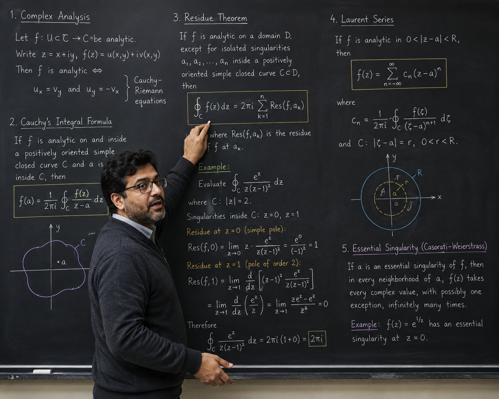
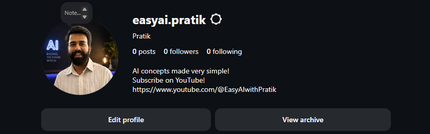

YOUTUBE_ROADMAP
INSTAGRAM_META

📐
Track 1
Fundamental
Maths for AI
🤖
Track 2
Generative &
Agentic AI
arXiv:1706.03762v7 [cs.CL]
Attention Is All You Need
⭐ 142k
arXiv:2106.09685v2 [cs.LG]
LoRA: Low-Rank Adaptation
⭐ 84k
arXiv:2305.18290v2 [cs.LG]
Direct Preference Optimization
⭐ 41k
arXiv:1603.09320v4 [cs.DS]
HNSW Vector Search
⭐ 32k
SUBSCRIBE
LET'S BUILD TOGETHER